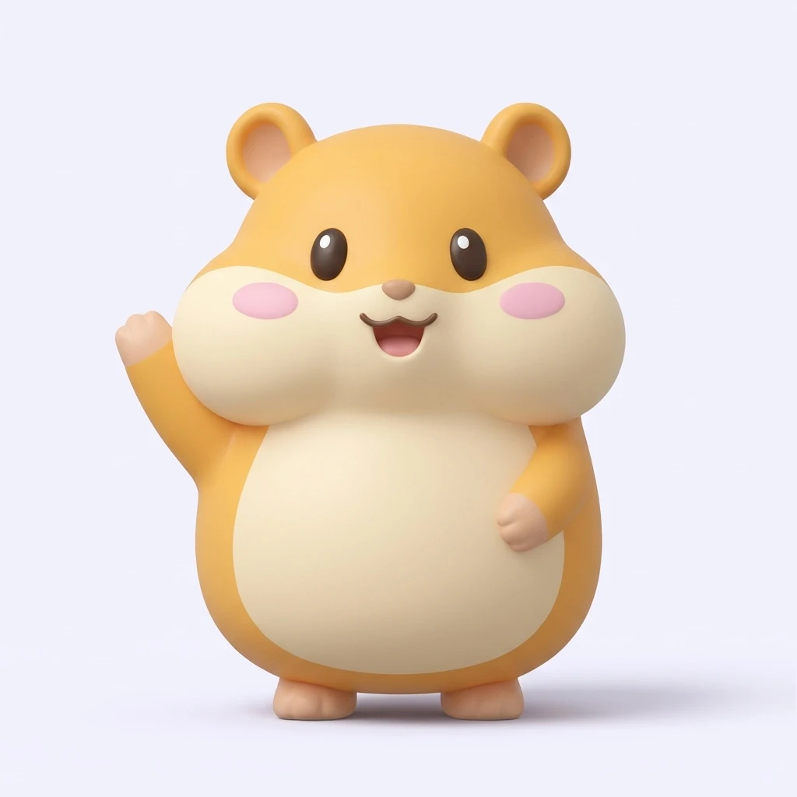
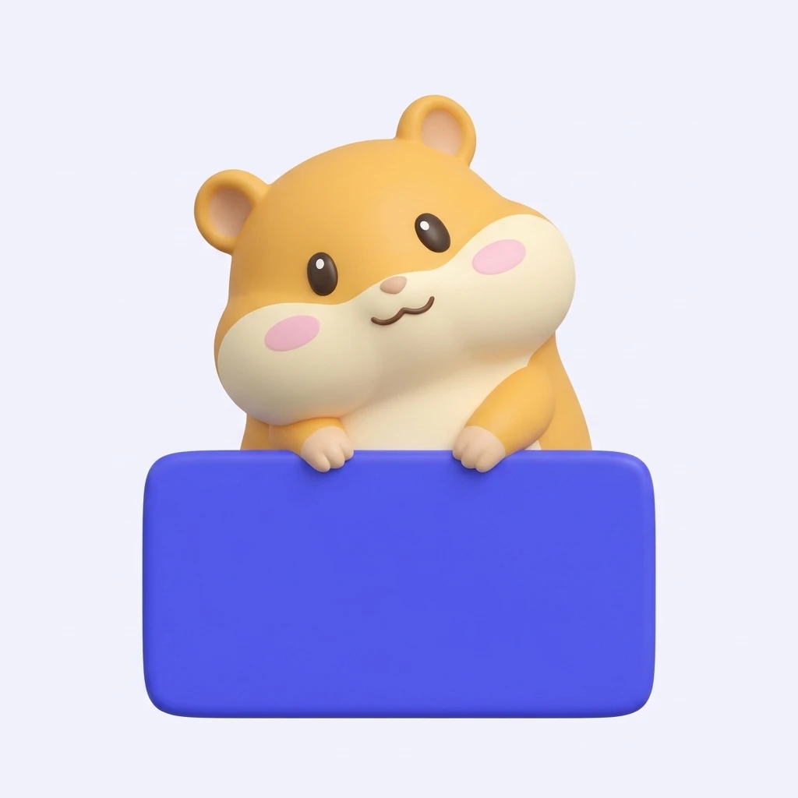

Final: the original bad-day Kanko is back, and the pictures now fade into
the screen with no square edges.
9:41●●●
Three days strong!
Your mouth is thanking you.
3
trigger-free days
6 more to beat your best
TodayMapHistoryMe
1 · Today, on a winning streak. Kanko's cheeks are at their
fullest, and the streak is the hero.
9:41●●●

Hi, I'm Kanko.
Let's work out what sets your mouth sores off, one day at a time.
2 · Welcome. The first thing a new user sees: a friendly face
and one clear promise.
9:41●●●

No sores logged yet
When one shows up, tap the spot on the mouth map and I'll keep track
of it.
TodayMapHistoryMe
3 · Empty map. Curious Kanko turns a blank screen into an
invitation.
9:41●●●
Rough one today.
Logged. That's the hard part done.
Under the tongue
New today
7 / 10
Might help: soft, cool foods and skipping citrus for a day or
two.
4 · A bad day. Quieter voice, no confetti, a calm button. Red
appears only on the pain score.
9:41 pm●●●
Before bed: how did today go?
Two taps and you're done. Kanko's already yawning.
5 · Evening check-in. A dark night version for the end-of-day
reminder.
Mail
Photos
Canker Core
Notes
Maps
Music
Health
Clock
Canker CoreFour days strong! Keep that streak going, Kanko
believes in you.
6 · App icon and notification. Kanko's puffed-cheek face is the
icon.
Version 1 of the redraw, with no stray labels and a lavender pillow. Every
later image uses this as its reference.